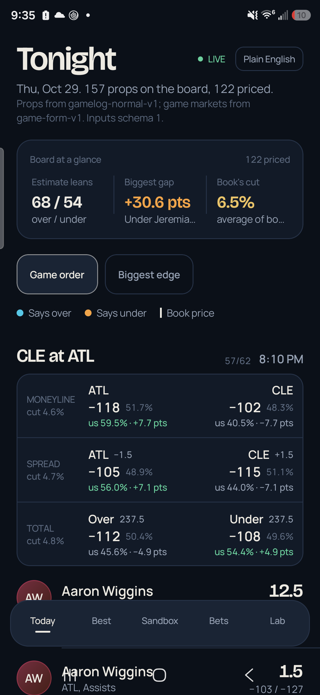
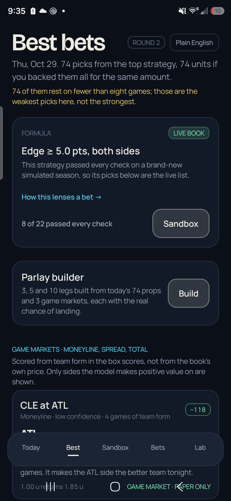
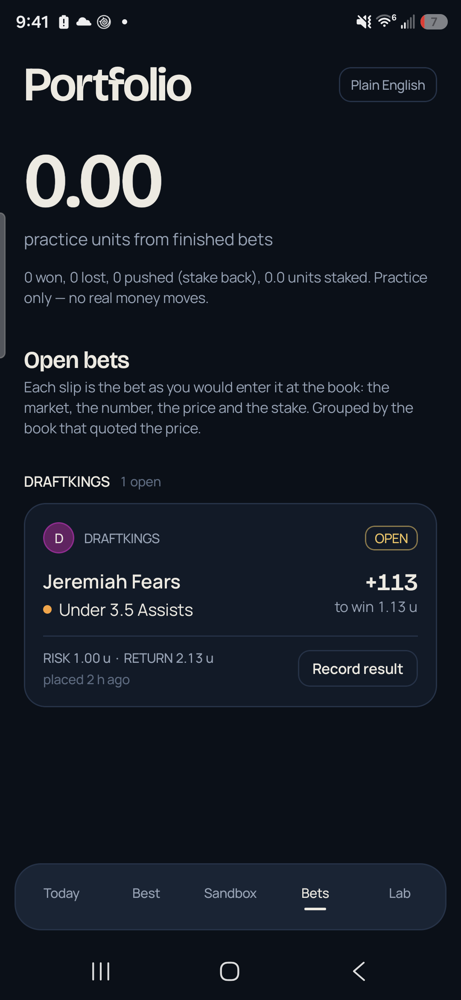
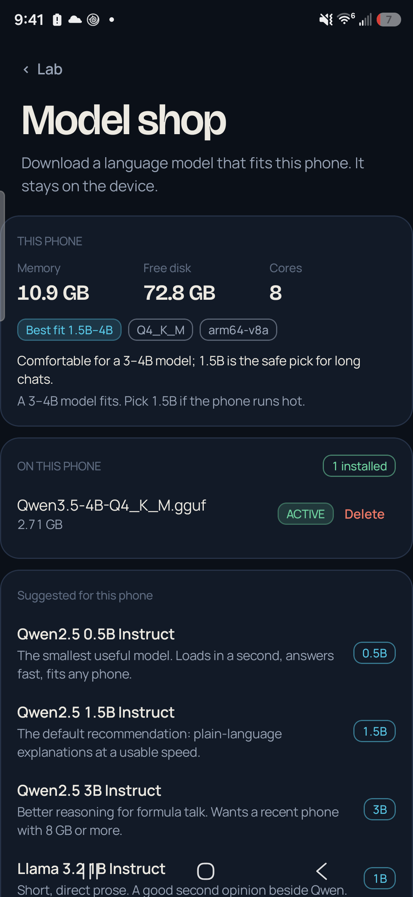
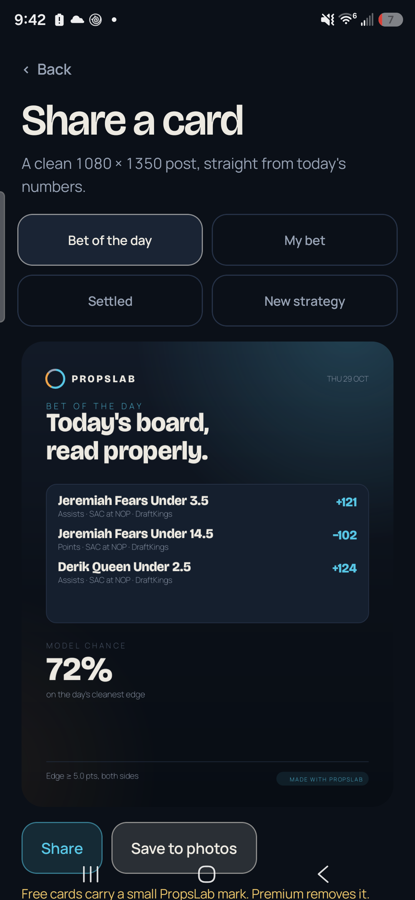
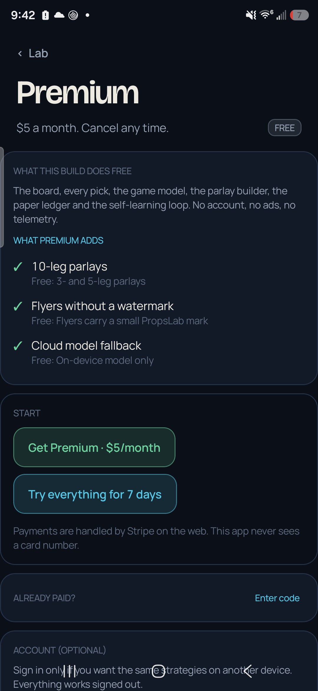
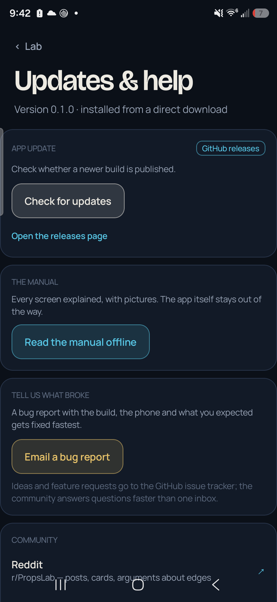

Everything, without the app explaining itself.
This page replaces the walls of text that used to sit on the screens. The app shows numbers; the manual explains them. Screenshots are from the S25 build and use whichever real board that phone had that day.
1. Start here
Cheat Code is a paper-trading lab for NBA player props. It reads a board of prices, prices the same board with its own models, and logs every decision so it can check itself later. It never places a wager and cannot connect to a sportsbook account.
Three rules explain almost everything the app does:
- One number, one owner. The books own the prices. The model owns the chance. Neither overwrites the other, and the gap between them is what gets bet.
- Nothing trades until it proves an edge. A formula must clear the sandbox gate before its picks reach the Best screen.
- A bad record is information. Every priced row is logged, including the ones the app dislikes, so the ledger can tell it when it is wrong.
Fixtures. On a fresh install the board is synthetic and labelled. It retires the first time a real sync writes prices.
2. Set up the feed
Open Lab → Live data. Two keys are enough: one for prop prices, one for box scores. Box scores have a keyless source (ESPN) so results can start immediately; prices need a provider key.
| Prop prices | A read-only odds key. The default request is deliberately small because each market costs a credit. |
| Box scores | ESPN needs no key. BALLDONTLIE is the alternative for deeper history. |
| Injuries | The league's own report is read without a key. A manual note always outranks it. |
| Sync cadence | Every 30 minutes in the background; press Sync now for an immediate run. |
The first successful sync does three things: retires the fixtures, writes real prices to the Today board, and starts the learning ledger.
3. Today

What you are looking at
- Board at a glance — how many estimates lean over and under, the single biggest model-versus-book gap, and the average book cut (hold).
- Game lines — moneyline, spread and total, each with the book's price and no-vig chance plus the model's chance and gap in points. A game is scored only when both teams have enough box scores.
- Prop rows — one player, one market, one line. The bar splits over / push / under, with a chalk tick at the market's own price. The distance between the tick and the end of the aqua bar is the edge.
Sort by Game order to follow the slate, or Biggest edge to see where the model most disagrees with the market. Tapping a row opens the full explanation: both prices, the no-vig probability, the push mass and the flags.
4. Best bets

This screen answers one question: if the live strategy took everything it liked today, what would that be? The pick list is not curated by hand. It is the output of the formula that cleared the sandbox gate, applied to real quotes. A pick resting on fewer than eight games is marked, because a short sample is still a short sample.
The game markets below the props are scored from team form, not copied from the book. Only sides with positive expected value are published, and each one says what the model projects.
5. Parlays

Best → Build opens the parlay builder. It produces a 3-leg, a 5-leg and (on Premium) a 10-leg ticket from the same ranked board.
- The chance is the product of the legs' model probabilities, with each leg's push mass conditioned out.
- The price is the product of the decimal odds. Ten legs at about 60% each multiply to roughly 0.6%, which is why the payout is large.
- Every ticket reserves a game-market leg first, then fills with props: one per game while the board allows it, then one per player, then repeats.
- Legs that share a game are correlated. The card says how many do, because the product is then an approximation.
Parlays multiply the margin too. A book's cut compounds with every leg. A five-leg ticket is a lottery ticket with a nicer font.
6. Sandbox and the gate

Every round builds a fresh simulated season (150 days, 80 props a day), runs every candidate formula over it with flat one-unit stakes, and gates the results.
| 400 bets | Enough decisions that a hot streak is not the whole story. |
| ROI above 1.5% | The simulated world is beatable, so a candidate that cannot clear this has found nothing. |
| t-statistic above 2.0 | The profit is distinguishable from luck. |
| Drawdown under 45% | A formula that nearly ruins the bankroll is not usable, however it ends. |
| Hit rate above break-even | Measured at the prices it actually took, not at fair odds. |
The winning formula keeps the live book until it stops passing. Then it is retired and the best passing candidate replaces it. Every promotion and retirement is written to the audit trail, which sits behind the sandbox.
Run a round is safe to press repeatedly: every round uses a new seed, and the incumbent is only displaced when it genuinely fails.
7. Self-learning
The Lab's Learning ledger card is the model's report card.
- Every sync logs a paper decision on every priced row, props and game markets alike, at the line and price that were live.
- Finished games settle those rows from real box scores. Nothing is filtered by confidence.
- After 200 settled decisions per track, a Platt correction is fitted: a slope (is the model over- or under-confident?) and a shift.
- The correction is applied to every future chance before it is published. Brier scores before and after the fit are recorded.
Why this matters. A model can be directionally right and still badly priced. This loop fixes the pricing, not the story.
8. Bets

Place a paper bet from any pick. It stores the line and price at decision time, so a later line move cannot rewrite history. One bet per pick and side. Settlement writes an audit event and never overwrites a result.
Every row also shows the actual stat once the game is final, so a win and a near-miss look different.
9. Writing a strategy

Type a belief the way you would say it: “their defense decides this one”, “he goes under because the game gets away from them”. The app turns it into:
- a tilt — how far the belief moves the model's probability,
- a side filter — over, under, or both,
- a market scope — points, rebounds, assists, threes, PRA, or everything.
The candidate is then tested on a fresh season like any other formula. You see the result in plain words first; the arithmetic is one tap away. A belief that does not survive is not hidden — it is reported as a failed test.
Lenses explains how each live formula changes the way a bet is read, in game terms.
10. Model shop

The lab and the console can write in the phone's own words with no network. To do that they need weights.
- This phone reports memory, free storage, cores and CPU. It recommends a parameter band and a quantization. The storage rule is conservative: a model may use at most 55% of RAM, and 600 MB must remain free after a download.
- Suggested lists a curated shelf. Tap one to read its actual file list from the Hugging Face API, with real sizes and quantizations, each marked Fits or Too big.
- Get downloads into the app's private storage. The file is written as
.partand only renamed when complete, so a half-download can never be loaded. - Use makes a model active; Delete removes it.
Search looks across public GGUF repositories, most downloaded first. Nothing is uploaded and no Hugging Face account is needed.
Cloud fallback
Premium can point the app at any OpenAI-compatible endpoint for phones that cannot hold useful weights. The key is stored privately and shown only as its last four characters. Local weights always win: with a model installed, no prompt leaves the device even if a key is saved.
11. Share cards

Four templates: Bet of the day, My bet, Settled and New strategy. Each one is assembled from the real board or ledger, never typed in by hand. Share sends the PNG to any app; Save to photos writes it to Pictures/Cheat Code.
Free cards carry a small mark. Premium removes it.
12. Premium

Payment runs through Stripe's hosted checkout in the browser, so no card number ever reaches the app. After paying, paste the unlock code (PL5-XXXX-XXXX-XXXX) into Lab → Premium → Enter code.
| Free | Everything analytical: the board, picks, game model, ledger, learning loop, on-device model, 3- and 5-leg parlays. |
| Premium | 10-leg tickets, clean cards, cloud model fallback. |
| Trial | Seven days, once, no card. |
| Code format | The last four characters are a checksum of the first twelve. A typo is refused; a valid code unlocks offline. |
During the beta codes are issued by hand from the receipt. The checksum proves a code was issued for this scheme, not that a payment happened; a licence server is the next step.
13. Updates and help

- Check for updates reads the latest GitHub release and compares it with the installed version.
- Install update downloads the attached APK and hands it to Android's installer. Android always asks; the app cannot install silently.
- Read the manual offline opens this page from inside the APK.
- Email a bug report pre-fills the build, the phone model, the Android version and the active model.
14. Account and privacy
An account is optional and is used only to carry strategies between devices. Sign-in is a passwordless email code; there is no password to store or reset. The session token lives in private preferences and is never written to the database, the audit trail or a log line.
Feeds are read-only. Keys are stored privately and are never displayed back. There is no analytics, no crash reporter and no advertising SDK in the app.
15. Troubleshooting
The board is empty
Check the two keys under Lab → Live data, then press Sync now. If the price provider is out of credits, the screen says so instead of pretending.
“Only N games logged”
The player does not have four games in the stored box scores. The model refuses to publish an estimate rather than invent one. Another sync fixes it once results land.
The model will not load
Open Model shop. The card states the exact path it looked in and whether the native runtime loaded. A LoRA adapter is not a base model; it cannot run alone.
A download stopped
The partial file is discarded, never loaded. Free space and try again; the shop checks the byte count against the reported size.
An update says “no release published”
The release feed has no release yet, or this fork points at a different repository.
16. Glossary
| No-vig chance | The book's two prices with its margin removed. It is the market's honest opinion. |
| Edge (points) | Model chance minus no-vig chance, in percentage points. |
| EV | Expected value per unit staked, including the push mass. |
| Push | An integer line landing exactly. The stake returns; the bet neither wins nor loses. |
| Kelly | The growth-optimal stake for a known edge. The app uses a quarter of it, because the edge is an estimate. |
| Brier score | Mean squared error of probabilities. Lower is better; used to check a calibration. |
| Platt fit | A two-parameter correction (slope, shift) applied to a probability. |
| Tilt | A strategy's shift of the model's probability, in points, compiled from a sentence. |
| Gate | The five checks a formula must pass before it may trade the live board. |
17. Responsible play
Cheat Code is analysis, not advice, and every bet it records is paper. A positive expected value is an estimate that can be wrong for a long time. Parlays compound the book's margin.
If gambling stops being fun: National Problem Gambling Helpline, 1-800-522-4700. 18+.